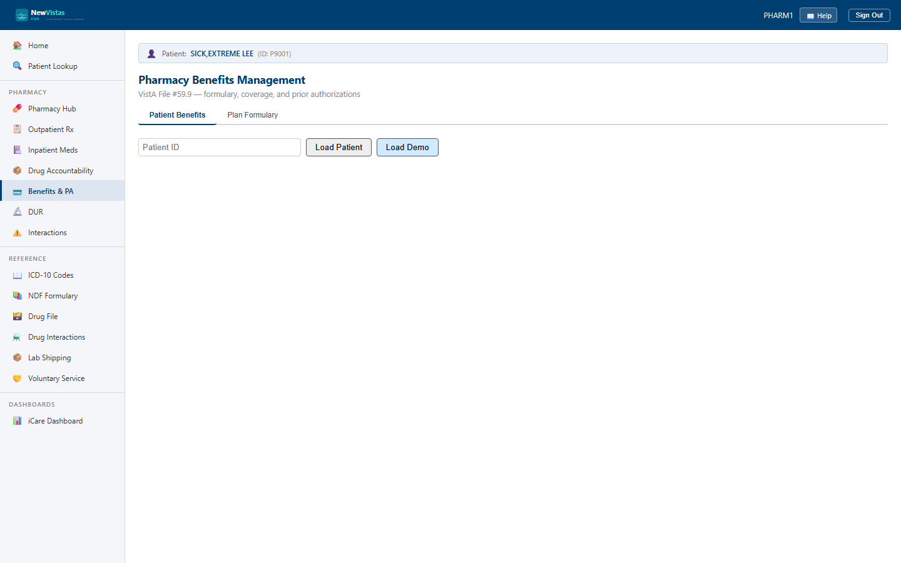

Pharmacy Benefits Management
The Pharmacy Benefits screen checks a patient's drug plan — formulary tier, copay, coverage, and quantity limits — and runs the prior-authorization review queue. It's the equivalent of VistA's Pharmacy Benefits Management (BPS), File #59.9, organized into a Patient Benefits tab and a Plan Formulary tab.
Open Pharmacy Benefits
- From the sidebar, open Pharmacy Benefits (or go to
/pharmacybenefits). - On the Patient Benefits tab, type a Patient ID and click Load Patient.
- The plan card loads with the plan name, active state, insurer, member and group numbers, and effective/expiration dates.

What you see
The plan card
The plan card shows four boxes — Tier 1 (Preferred Generic), Tier 2 (Preferred Brand), Tier 3 (Non-Preferred), and the annual Deductible, marked MET or Not met. An ACTIVE or INACTIVE badge sits next to the plan name.
Coverage check
- Under Coverage Check, type a Drug ID (e.g.
50-WARFARIN). - Click Check Coverage.
- The result shows the coverage status badge — COVERED, NOT_COVERED, REQUIRES_PA, or NON_FORMULARY — plus the tier, the applicable copay, a PA REQUIRED badge where it applies, and any quantity limit.
Review prior authorizations
The Prior Authorizations table lists each request with its drug, status badge (PENDING, APPROVED, DENIED, EXPIRED), request date, expiration, and provider.
- On a PENDING request, click Approve or Deny.
- Approve — enter the reviewer ID and name, an expiration date, and optional notes, then Submit.
- Deny — enter the reviewer ID and name and a denial reason, then Submit.
- The table refreshes with the new status.
Browse a plan formulary
- Switch to the Plan Formulary tab.
- Type a Plan ID (e.g.
TRICARE-STD) and click Load Formulary. - Filter by tier or by PA Required only.
- Each row shows the drug, tier, coverage, PA flag, copay override, quantity limit, day-supply limit, and whether step therapy is required.